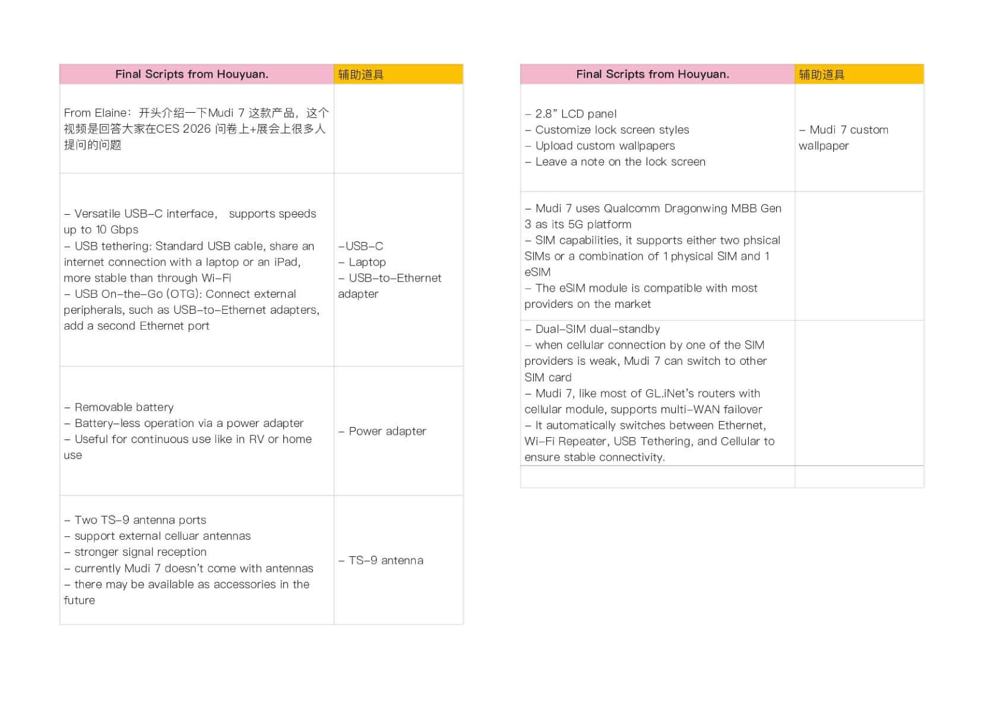
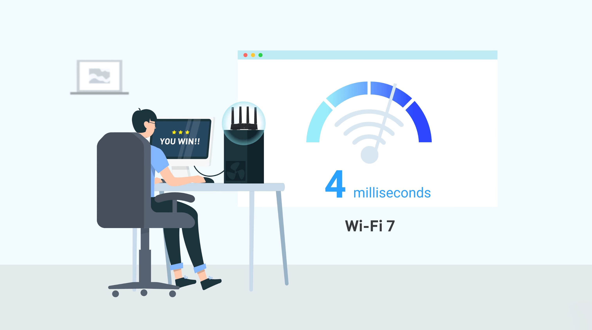
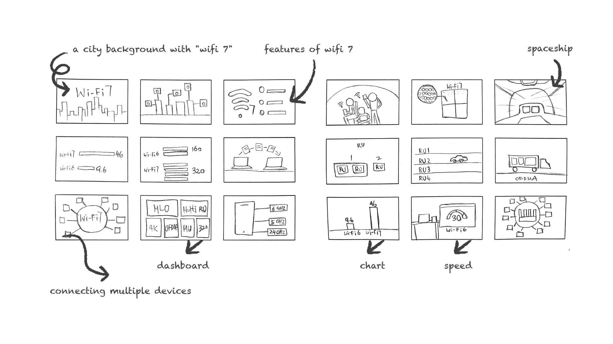

Campaign Video
Showcases GL.iNet products through promotional videos, FAQ guides, and feature demonstrations.
Overview
Over the past few years, I have produced numerous tutorial and campaign videos for GL.iNet — primarily focused on topics such as setting up routers, connecting to VPNs or servers, and themes related to IoT, the internet, and Wi‑Fi. Production mixes live product footage with graphics and motion; each piece also gets a custom thumbnail designed for engagement on YouTube and product channels.
Focus
Turn product features into clear on-screen stories — promotional impact for marketing, and instructional clarity for customers learning setup and capabilities.
Feature demos
Explain capabilities such as repeater mode, VPN, and Wi‑Fi generations with paced visuals and simple language.
Tutorial clarity
Stock footage or original film for scenes; graphics and animation for methods — so setup steps stay easy to follow.
Motion graphics
Abstract ideas (Multi-Link Operation, 4K QAM, OFDMA) visualized with shape, color, and speed in After Effects.
Thumbnails
Theme-based thumbnail design for each video to improve click-through on YouTube and product pages.
#1 Q & A
A GL.iNet FAQ video answering the top community questions about Mudi 7 (GL-E5800) from CES 2026. Hosted by marketing’s HY, it covers USB tethering and Ethernet options, running without the battery, external antenna ports, the 2.8" LCD and custom wallpapers, dual-SIM / eSIM setup, and multi-WAN failover — a clear product Q&A for anyone considering the new 5G travel router.
Storyboard
Before filming, the FAQ script was broken into beats — product intro, USB‑C and tethering, battery‑less use, antenna ports, display customization, and dual‑SIM / multi‑WAN failover — with props listed for each answer.

#2 What is Wi‑Fi 7?
This campaign explainer highlights the benefits of Wi‑Fi 7 — significantly faster speeds, lower latency, and enhanced capacity compared to Wi‑Fi 6. It explores key features like Multi-Link Operation and 4K QAM technology, showing how they contribute to a smoother and more reliable digital experience.

Storyboard
Before animation, a storyboard mapped the arc: city background with “Wi‑Fi 7”, feature callouts, device connections, dashboards, speed charts, and multi-stream visuals — so every beat had a clear visual plan.

Difficulty
The hardest part of the Wi‑Fi 7 film was visualizing abstract features — 4K QAM, Multi-Link Operation, Multi-RU Puncturing, and OFDMA. Related technical videos were referenced; dots and shapes stand in for principles, with speed, color, and size used to keep each item distinct.
For example, the 6 GHz band is shown darker, larger, and faster, while the 2.4 GHz band is lighter and slower — so the difference reads without a dense caption.
4K QAM
Dense modulation suggested with patterned dots and progressive density.
Multi-Link Operation
Band bars (6 / 5 / 2.4 GHz) sized and colored by capacity and speed.
Multi-RU Puncturing
Resource units (RU 1–3) as separate blocks that can be punctured independently.
OFDMA
Overlapping circles and shared spectrum to show concurrent user access.
Outcome
A body of promotional and instructional campaign videos for GL.iNet — feature explainers like Wi‑Fi 7, product instruction with scenario, and FAQ-style films ready for YouTube.